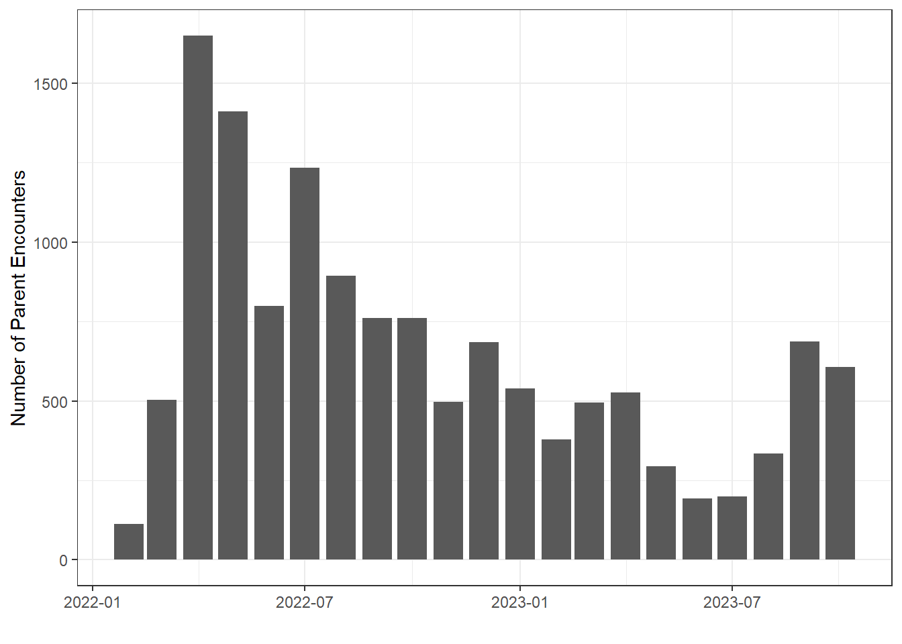
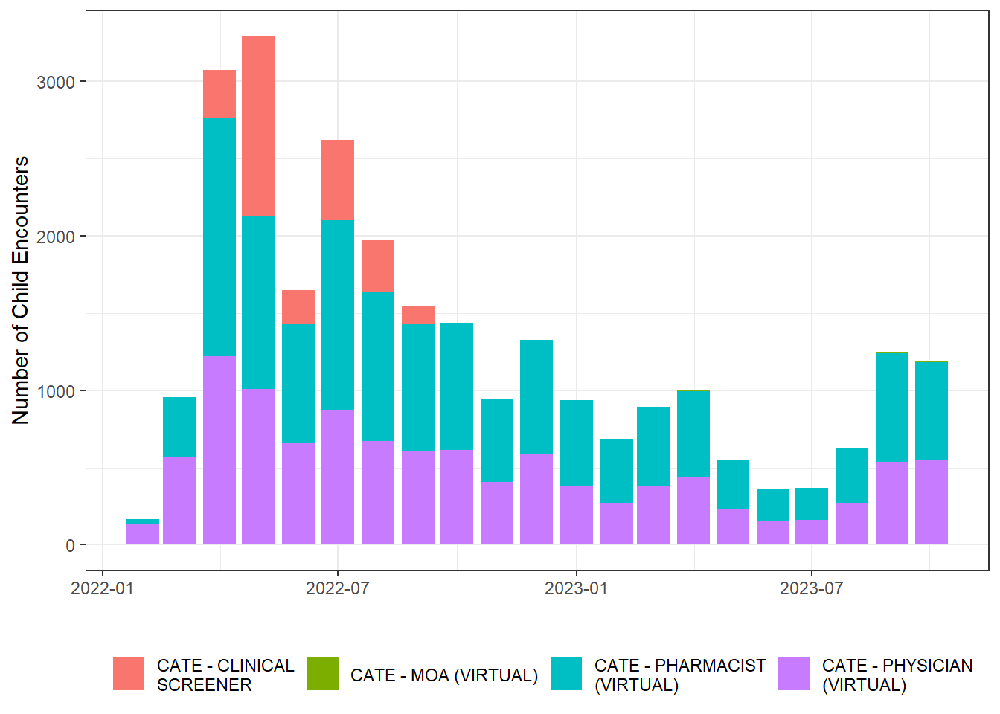
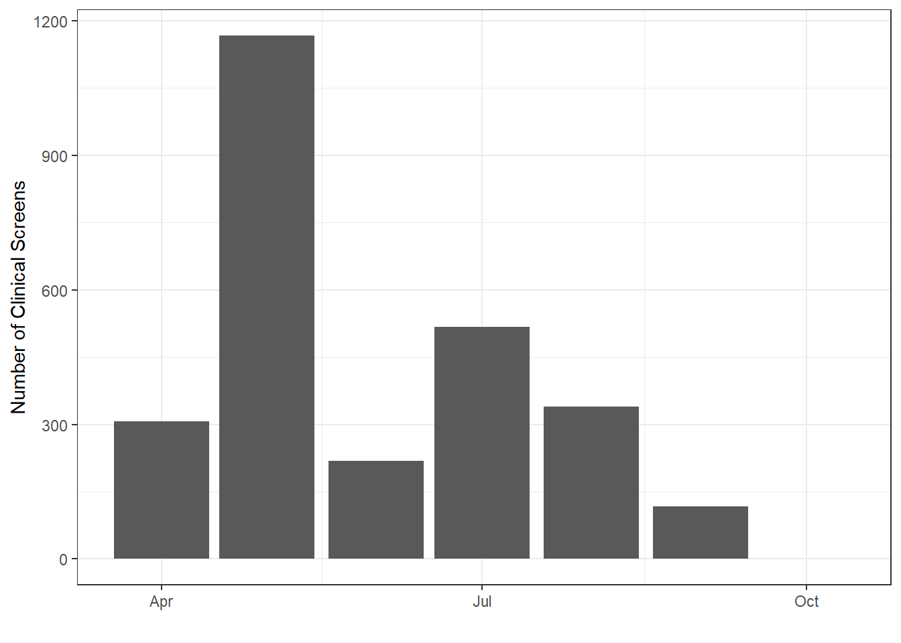
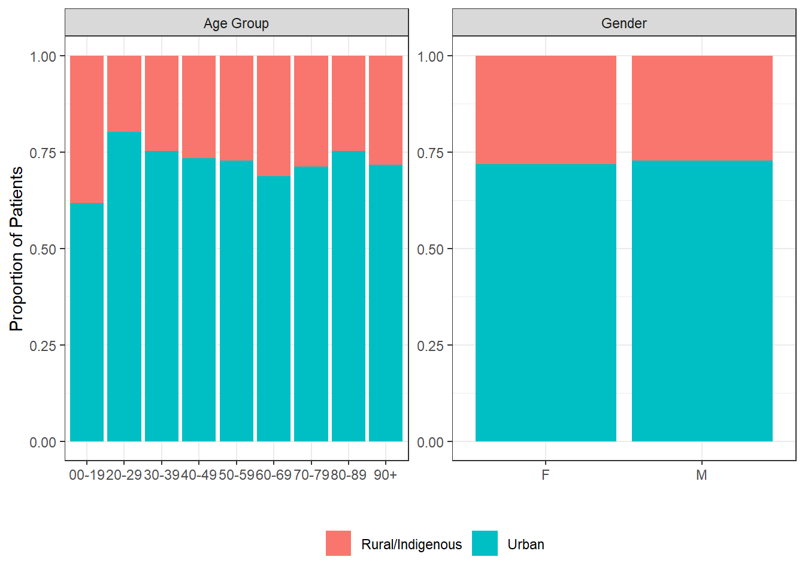
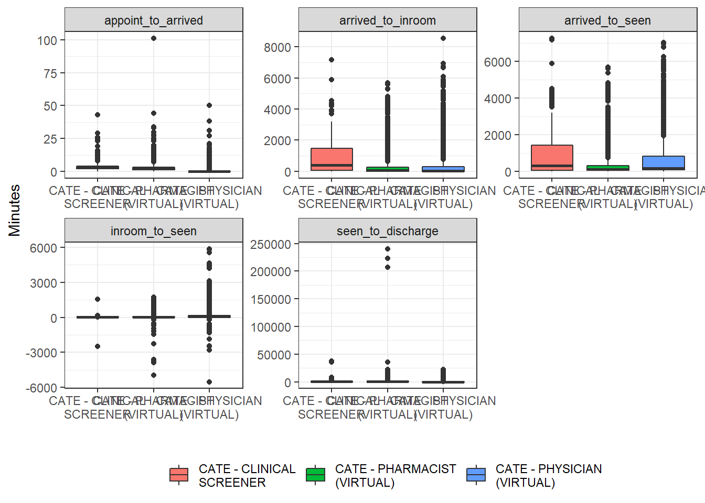
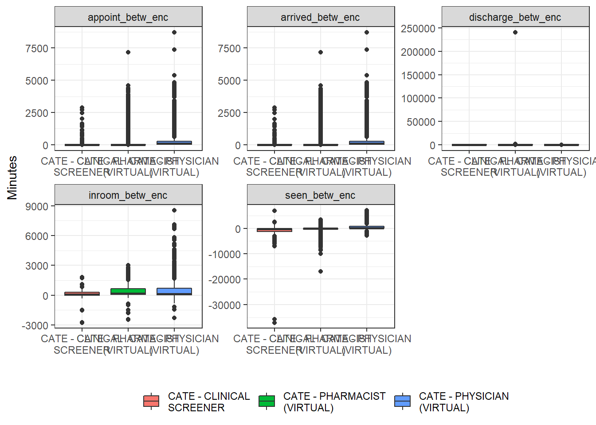
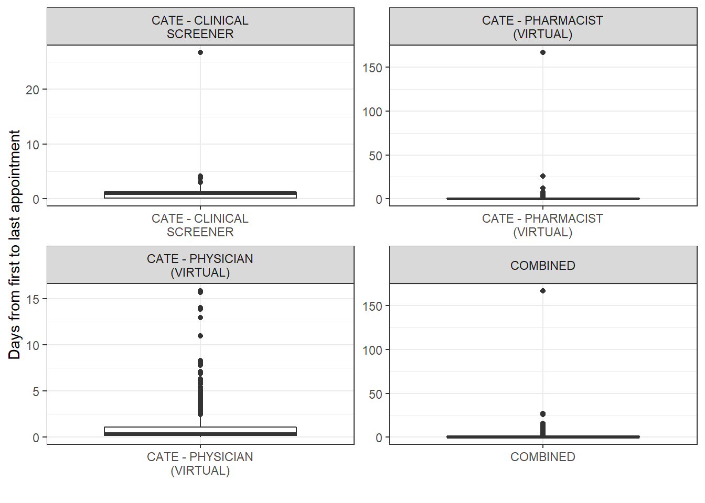

encounter_type | tracking_queue | n | percent |
|---|---|---|---|
CHILD ENCOUNTER | CATE - CLINICAL SCREENER | 2,666 | 6.6% |
CHILD ENCOUNTER | CATE - MOA (VIRTUAL) | 39 | 0.1% |
CHILD ENCOUNTER | CATE - PHARMACIST (VIRTUAL) | 13,396 | 33.2% |
CHILD ENCOUNTER | CATE - PHYSICIAN (VIRTUAL) | 10,726 | 26.6% |
PARENT ENCOUNTER | CATE - MOA (VIRTUAL) | 13,555 | 33.6% |
CATe Pathway Evaluation
1 Overview
HealthLink BC has provided a de-identified extract from the MOIS EMR of all CATe encounters from the start of CATe (February 2022) to October 2023.
- First encounter date: 2022-02-14.
- Last encounter date: 2023-10-31.
- Number of overall MOA (“parent”) encounters: 13555.
- Number of clinical (“child”) encounters: 26827.
- Unique patients (based on MOIS chart): 12934.
1.1 Notes & Limitations
The MOIS EMR extract includes information related to:
- Patient demographics (age, gender, city, residence).
- Patient intake information (vaccination status, clinical vulnerability, COVID onset).
- Encounter information (provider type, dates/times, outcome).
Based on this extract, a select number of CATe metrics can be analyzed and reported on. The following section headers starting with “METRIC” indicate relevant metrics. Patient demographics are summarized across encounters based on initial parent encounter.
Note: tables and figures are initial drafts and can be modified as needed later.
2 METRIC Number of CATe encounters recorded in the MOIS/other EMR (Encounter Volumes)
There have been a total of 40382 CATe encounters recorded in the MOIS EMR extract through October 2023.
2.1 Total Encounters by Type (Tracking Queue)
2.2 Parent Encounters by Month

2.3 Child Encounters by Month and Type

2.4 Encounter Flow
Looking at the diagram below, we can see that the typical encounter order went: MOA, Pharmacist, then Physician; with a noticeable phase where the Clinical Screeners were available after the MOA. However, we also see that some encounter types were repeated (i.e., the loops), likely indicating where patients could not be initially reached by one provider then were passed to a different provider within the same type.
2.5 Clinical Screener Implementation

3 METRIC A1: Age, Sex, Region, ethnic, racial
Age and sex are reported here; region (health authority) and background are reported in a different section below. The data do not contain further information related to patient ethnicity or race.
3.1 Age
The tables below show the distribution of patients’ ages as a continuous number or grouped in 10-year or three-level groupings.
statistic | value |
|---|---|
patient_age_min | 7.00 |
patient_age_median | 67.00 |
patient_age_mean | 63.69 |
patient_age_max | 102.00 |
patient_age_IQR | 23.00 |
patient_age_sd | 17.01 |
Age (group) summary
age_group_10yr | n | percent |
|---|---|---|
00-19 | 68 | 0.5% |
20-29 | 500 | 3.7% |
30-39 | 986 | 7.3% |
40-49 | 1,205 | 8.9% |
50-59 | 1,985 | 14.6% |
60-69 | 2,846 | 21% |
70-79 | 3,635 | 26.8% |
80-89 | 1,944 | 14.3% |
90+ | 385 | 2.8% |
age_group_3 | n | percent |
|---|---|---|
0-14 | 15 | 0.1% |
15-64 | 5,992 | 44.2% |
65+ | 7,547 | 55.7% |
3.2 Gender
gender | n | percent |
|---|---|---|
F | 7,861 | 58% |
M | 5,678 | 41.9% |
Missing | 16 | 0.1% |
4 METRIC B2: Proportion of patients from different ethnic/racial backgrounds accessing the CATe virtual HLBC line
There is one variable (“cmp_residence”) that indicates if the patient is “urban” or “rural/Indigenous”.
4.1 Overall
cmp_residence | n | percent |
|---|---|---|
Rural/Indigenous | 3,755 | 27.7% |
Urban | 9,800 | 72.3% |
4.2 By Age and Gender
The distribution of patient residence differed significantly by age group, but not by gender.

5 METRIC B5: proportion of patients from different HA
**To be determined using patient’s city.
6 METRIC B1: Wait time between request & encounter Average wait times for services, broken down by demographic group, to detect disparities
Based on the encounter date/time variables available in MOIS, we should be able to determine the time spent by each patient from when their service request was first entered by HLBC until they were discharged and different durations within and across encounters (i.e., wait times). The MOIS data are organized with each encounter as a row and date/time variables ordered as columns as appointment/arrived/in room/seen/discharged. However, when calculating times by this order, this yields negative and extremely long times - both within and across encounters. How should these unusual values be handled?
6.1 Within Encounter Durations
Based on the figure and table below, it appears that patient wait times and encounter durations varied substantially. It seems that the time between the “appointment” and “arrived” variables may indicate the wait time (i.e., from when the patient’s chart was added to that queue until the chart was opened by the provider). It does not appear that there is a good variable to use determine encounter duration - HLBC previously suggested time from “arrived” to “seen”, however, these times are very long.

encounter_phase | statistic | CATE - CLINICAL SCREENER | CATE - MOA (VIRTUAL) | CATE - PHARMACIST (VIRTUAL) | CATE - PHYSICIAN (VIRTUAL) |
|---|---|---|---|---|---|
appoint_to_arrived | minutes_min | 0.00 | 0.00 | 0.00 | 0.00 |
appoint_to_arrived | minutes_median | 3.00 | 2.00 | 2.00 | 0.00 |
appoint_to_arrived | minutes_mean | 3.07 | 2.93 | 2.15 | 0.26 |
appoint_to_arrived | minutes_max | 43.00 | 101.00 | 101.00 | 50.00 |
appoint_to_arrived | minutes_sd | 2.29 | 2.55 | 2.37 | 1.53 |
arrived_to_inroom | minutes_min | 0.00 | 237.00 | 0.00 | 0.00 |
arrived_to_inroom | minutes_median | 399.00 | 985.00 | 50.00 | 38.00 |
arrived_to_inroom | minutes_mean | 912.71 | 737.00 | 329.60 | 370.78 |
arrived_to_inroom | minutes_max | 7,156.00 | 989.00 | 5,679.00 | 8,534.00 |
arrived_to_inroom | minutes_sd | 988.08 | 433.02 | 661.05 | 722.26 |
arrived_to_seen | minutes_min | 0.00 | 1.00 | 0.00 | 0.00 |
arrived_to_seen | minutes_median | 311.50 | 351.00 | 113.00 | 171.00 |
arrived_to_seen | minutes_mean | 814.60 | 956.49 | 378.10 | 509.97 |
arrived_to_seen | minutes_max | 7,251.00 | 38,545.00 | 5,692.00 | 7,015.00 |
arrived_to_seen | minutes_sd | 933.28 | 1,321.59 | 655.11 | 748.07 |
inroom_to_seen | minutes_min | -2,496.00 | -91.00 | -4,970.00 | -5,520.00 |
inroom_to_seen | minutes_median | 13.00 | -65.00 | 31.00 | 72.00 |
inroom_to_seen | minutes_mean | 14.08 | -51.67 | 53.49 | 141.15 |
inroom_to_seen | minutes_max | 1,546.00 | 1.00 | 1,722.00 | 5,862.00 |
inroom_to_seen | minutes_sd | 72.80 | 47.43 | 118.32 | 300.35 |
seen_to_discharge | minutes_min | 4.00 | -1,660.00 | -2.00 | 1.00 |
seen_to_discharge | minutes_median | 354.00 | 46.00 | 254.50 | 62.00 |
seen_to_discharge | minutes_mean | 826.23 | 164.57 | 689.07 | 277.80 |
seen_to_discharge | minutes_max | 37,104.00 | 21,937.00 | 240,365.00 | 22,460.00 |
seen_to_discharge | minutes_sd | 1,372.16 | 516.58 | 3,496.70 | 853.89 |
6.2 Across Encounter Durations
Similarly, we expect that patient encounters should be sequential (e.g., appointment 2 follows appointment 1). However, based on an initial look at the data, the across-encounter times can be either very long or negative.

6.3 Total CATe Duration
And, we can try to find the entire duration that a patient accessed CATe, from when their chart was first added by the HLBC virtual MOA until they were discharged by a clinician. Note, the encounter type (e.g., “physician”) indicates who provided the final encounter recorded in MOIS before discharge.
Based on the data currently, it seems that most patients completed all CATe encounter types within 1 day approximately.

statistic | CATE - CLINICAL SCREENER | CATE - PHARMACIST (VIRTUAL) | CATE - PHYSICIAN (VIRTUAL) | COMBINED |
|---|---|---|---|---|
Days from first to last encounter_max | 26.77 | 167.07 | 15.86 | 167.07 |
Days from first to last encounter_mean | 0.96 | 0.60 | 0.85 | 0.80 |
Days from first to last encounter_median | 0.95 | 0.21 | 0.44 | 0.37 |
Days from first to last encounter_min | 0.02 | 0.01 | 0.01 | 0.01 |
Days from first to last encounter_sd | 1.25 | 3.08 | 0.99 | 1.74 |
7 METRIC Response time: average time taken to respond to a query or request during high demand periods versus regular periods.
Based on the monthly encounter volumes, the high demand period for CATe occurred from April through September 2022, which is when the Clinical Screeners were available.
8 METRIC Success Indicators (same-service use within 24 hours)
**TBD following how to handle unusual dates/times above.